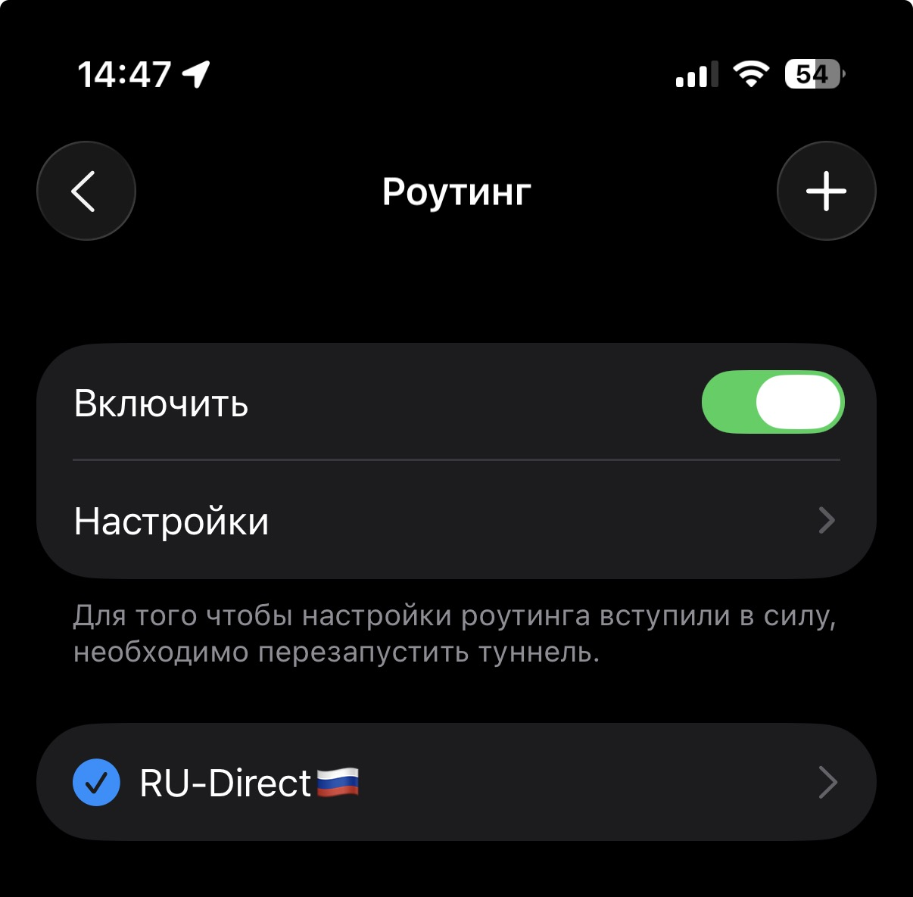

Настройка VPN (Streisand)
1 Установи приложение: Streisand
2 Запусти приложение
Streisand3
- Установи Роутинг: нажми
- Далее:
Streisand->Настройки->Роутинг - Установите галку напротив
RU-Direct 🇷🇺 - Включите тумблер напротив
Включить
Вот как это должно выглядеть:
4 Перейди на главное меню
5 Нажми на
+ сверху справа и «Добавить из
буфера». Разрешите вставку
6 Чтобы включить VPN, нажми на синюю иконку включения
7 Выдай приложению разрешение на добавление VPN
8 Чтобы отключить, нажми на зеленую иконку паузы